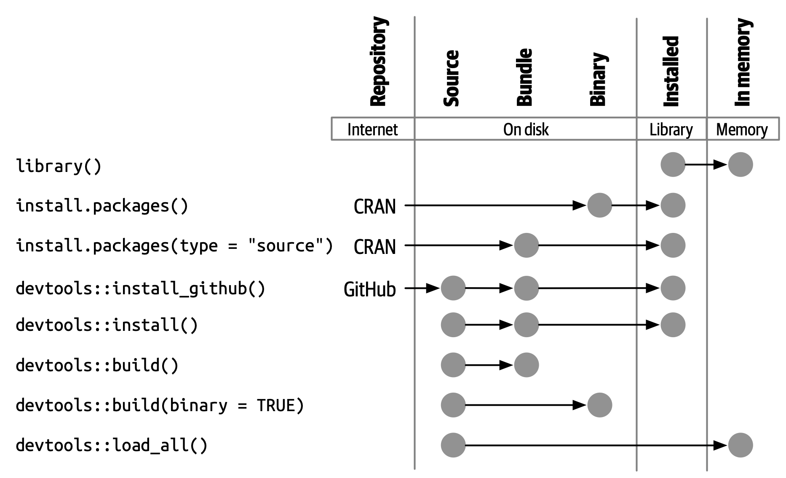
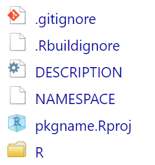
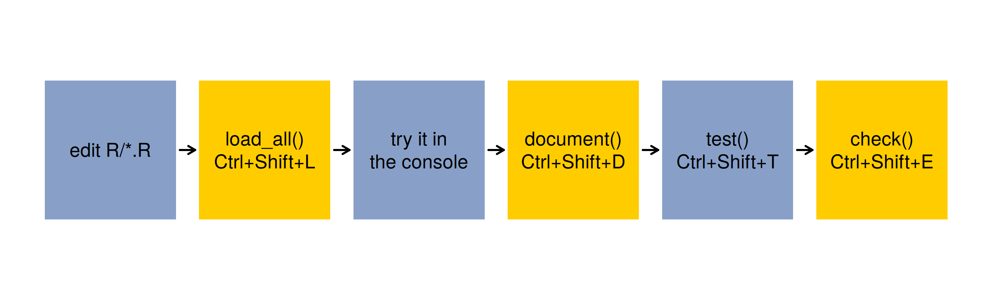
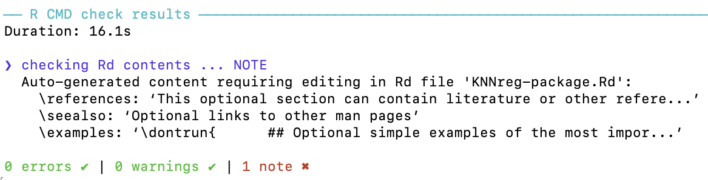
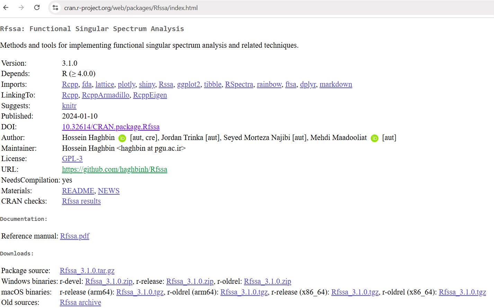

library(testthat)
test_that("the sample mean is the k = n k-NN fit", {
y <- c(3, 1, 4, 1, 5)
expect_equal(mean(y[order(abs(1:5 - 2))[1:5]]), mean(y))
})Developing an R Package 📦
MATH 4750 / MSSC 5750 Computational Statistics
Dr. Mehdi Maadooliat
Marquette University
MATH 4750 - Spring 2027
Developing an R Package
Why packages? Package structure and states
DESCRIPTION, NAMESPACE, R/, man/
Documentation with roxygen2 and tests with testthat
Building a package from scratch (live, with base R)
Checking, GitHub, and CRAN
R Packages: The Fundamental Unit
In R, the fundamental unit of shareable code is the package. A package bundles together
- code (functions, classes, methods),
- data,
- documentation (help pages, vignettes),
- tests,
all in one place, easy to share, install, and cite.
You already use packages: install.packages("boot"), library(boot), help(package = "boot"). What would it take to make your HW functions installable like that?
Why Write a Package?
- To share your code (classmates, collaborators, your future self)
- To make your code easy to install, use, and learn
- To save time with conventions: R CMD check finds problems you didn’t know you had
- Research software (e.g. an estimator from a paper) is expected to be a package
- Course connection: the
knnregclass, a Monte Carlo integrator, a bootstrap function … all are package-sized
Package Structure
knnreg/
├── DESCRIPTION # package metadata
├── NAMESPACE # exported functions & imports
├── R/ # your R functions
├── man/ # documentation (.Rd), generated by roxygen2
├── tests/ # unit tests with testthat
├── data/ # data sets (.rda)
├── src/ # C/C++ code (Rcpp, Ch 15)
├── vignettes/ # long-form documentation (Rmd/qmd)
└── inst/ # installed as-is (e.g. inst/app/ for a Shiny app, extdata/)Only DESCRIPTION, NAMESPACE, and R/ are required; add the others as needed.
Package States
- Source: the editable folder.
- Bundled: a
.tar.gzbuilt from source (R CMD build); portable, not yet usable. - Binary: precompiled for one OS (
.zipon Windows,.tgzon macOS). - Installed: unpacked into a library folder (
R CMD INSTALL,install.packages()). - In-memory: loaded into a session (
library(), ordevtools::load_all()during development).

System Setup
- Windows: install Rtools (matching your R version) for packages with compiled code.
- macOS:
xcode-select --install. usethiscreates files and folders;devtoolsbuilds, documents, tests, and checks;roxygen2writes help pages and the NAMESPACE.
Choosing a Name and Creating the Package
A valid name contains only letters, numbers, and periods, starts with a letter, and does not end with a period. Check availability: available::available("knnreg").
usethis::create_package("~/R/knnreg") # opens a new RStudio/Positron project
usethis::use_mit_license()
usethis::use_r("knnreg") # creates R/knnreg.R
usethis::use_testthat()
usethis::use_test("knnreg") # creates tests/testthat/test-knnreg.R
usethis::use_data(mydata) # saves data/mydata.rda
usethis::use_git(); usethis::use_github()
The DESCRIPTION File
Package: knnreg
Title: k-Nearest-Neighbor Regression with S3 Methods
Version: 0.1.0
Authors@R: person("First", "Last", email = "first.last@marquette.edu", role = c("aut", "cre"))
Description: Fits k-nearest-neighbor regression models, with print, predict,
and cross-validation methods. Written for MATH 4750 Computational Statistics.
License: MIT + file LICENSE
Encoding: UTF-8
Roxygen: list(markdown = TRUE)
RoxygenNote: 7.3.2
Imports: stats
Suggests: testthat (>= 3.0.0), shiny
Config/testthat/edition: 3- Imports: needed for your package to work (installed automatically). Suggests: optional (tests, vignettes, apps). Never call
library()inside package code; usepkg::fun()or@importFrom.
The NAMESPACE File
# Generated by roxygen2: do not edit by hand
S3method(predict,knnreg)
S3method(print,knnreg)
export(cv_error)
export(knnreg)
importFrom(stats,sd)export(): functions users can call. Everything else is internal (knnreg:::helper).S3method(): registers methods for generics.importFrom(): functions you use from other packages.- Generated from roxygen tags by
devtools::document().
Documenting with roxygen2
#' Fit a k-nearest-neighbor regression
#'
#' @param x A numeric matrix or data frame of predictors.
#' @param y A numeric response vector.
#' @param k Number of neighbors.
#' @return An object of class `knnreg`.
#' @examples
#' fit <- knnreg(mtcars[, c("wt", "qsec")], mtcars$mpg, k = 5)
#' predict(fit, data.frame(wt = 3, qsec = 18))
#' @export
knnreg <- function(x, y, k = 5) {
validate_knnreg(new_knnreg(as.matrix(x), as.numeric(y), as.integer(k)))
}
#' @export
predict.knnreg <- function(object, newdata = object$x, k = object$k, ...) { ... }devtools::document() turns these comments into man/knnreg.Rd and the NAMESPACE.
Testing with testthat
# tests/testthat/test-knnreg.R
test_that("k = n predicts the mean", {
fit <- knnreg(mtcars[, c("wt", "qsec")], mtcars$mpg, k = nrow(mtcars))
expect_equal(predict(fit, data.frame(wt = 3, qsec = 18)), mean(mtcars$mpg))
})
test_that("invalid k is an error", {
expect_error(knnreg(mtcars[, 1:2], mtcars$mpg, k = 0), "between 1 and n")
})The Development Loop

devtools::load_all()simulates installing and attaching: fast iteration without reinstalling.devtools::check()runs R CMD check: the gold standard.

Build a Package from Scratch (Live)
Step 1: Create the Source Folder with Base R
No helper packages needed: a package is just files.
pkg <- file.path(tempdir(), "knnreg")
unlink(pkg, recursive = TRUE); dir.create(file.path(pkg, "R"), recursive = TRUE)
writeLines(c(
"Package: knnreg",
"Title: k-Nearest-Neighbor Regression with S3 Methods",
"Version: 0.1.0",
"Authors@R: person('MATH', 'Student', email = 'student@marquette.edu', role = c('aut', 'cre'))",
"Description: Fits k-nearest-neighbor regression models with print and predict methods.",
"License: MIT + file LICENSE",
"Encoding: UTF-8",
"Imports: stats"), file.path(pkg, "DESCRIPTION"))
writeLines(c("YEAR: 2027", "COPYRIGHT HOLDER: knnreg authors"), file.path(pkg, "LICENSE"))
writeLines(c("export(knnreg)", "S3method(print,knnreg)", "S3method(predict,knnreg)", "importFrom(stats,sd)"),
file.path(pkg, "NAMESPACE"))Step 2: Add the Code
code <- '
knnreg <- function(x, y, k = 5) {
x <- as.matrix(x); y <- as.numeric(y); k <- as.integer(k)
if (nrow(x) != length(y)) stop("`x` and `y` must have the same number of observations")
if (k < 1 || k > nrow(x)) stop("`k` must be between 1 and n")
structure(list(x = x, y = y, k = k, center = colMeans(x), scale = apply(x, 2, sd)), class = "knnreg")
}
print.knnreg <- function(x, ...) {
cat("k-NN regression with k =", x$k, "on", nrow(x$x), "observations\\n"); invisible(x)
}
predict.knnreg <- function(object, newdata = object$x, k = object$k, ...) {
tr <- scale(object$x, object$center, object$scale)
te <- scale(as.matrix(newdata), object$center, object$scale)
apply(te, 1, function(x0) mean(object$y[order(colSums((t(tr) - x0)^2))[1:k]]))
}'
writeLines(code, file.path(pkg, "R", "knnreg.R"))
list.files(pkg, recursive = TRUE)[1] "DESCRIPTION" "LICENSE" "NAMESPACE" "R/knnreg.R" Step 3: Build, Install, and Use
[1] "* checking for empty or unneeded directories"
[2] "* building 'knnreg_0.1.0.tar.gz'" k-NN regression with k = 5 on 32 observations[1] 27.58 17.18Data, Compiled Code, and Apps in a Package
- Data:
usethis::use_data(df)\(\rightarrow\)data/df.rda; document it inR/data.Rwith@formatand@source. - C++ (Ch 15):
usethis::use_rcpp(); put code insrc/;// [[Rcpp::export]];LinkingTo: Rcppin DESCRIPTION. - Shiny app: put it in
inst/app/app.Rand export a launcher:
Sharing: GitHub and CRAN
GitHub
CRAN checklist
R CMD check --as-cran: 0 ERRORs, 0 WARNINGs, minimal NOTEs- All exported functions documented, examples run in < 5 s
- Valid license, plain-text Title/Description
rhub::rhub_check()on Windows/macOS/Linuxdevtools::release()(or the web form)

After Submission
- Automated confirmation e-mail; a CRAN maintainer reviews within days.
- They may accept, request fixes, or reject with reasons. Respond politely and resubmit with a bumped version (1.0.0 \(\rightarrow\) 1.0.1) and
cran-comments.md. - Keep a
NEWS.md; tag releases on GitHub.
Summary
- A package = DESCRIPTION + NAMESPACE + R/ (+ man/, tests/, data/, src/, inst/, vignettes/).
usethiscreates;roxygen2documents;testthattests;devtoolsloads, builds, and checks.- The loop: edit \(\rightarrow\)
load_all()\(\rightarrow\)document()\(\rightarrow\)test()\(\rightarrow\)check(). - Share via GitHub; submit to CRAN when
check()is clean.
Final-project tip: turn your project code into a small package with at least two exported, documented functions, one S3 class with a print method, and three unit tests.